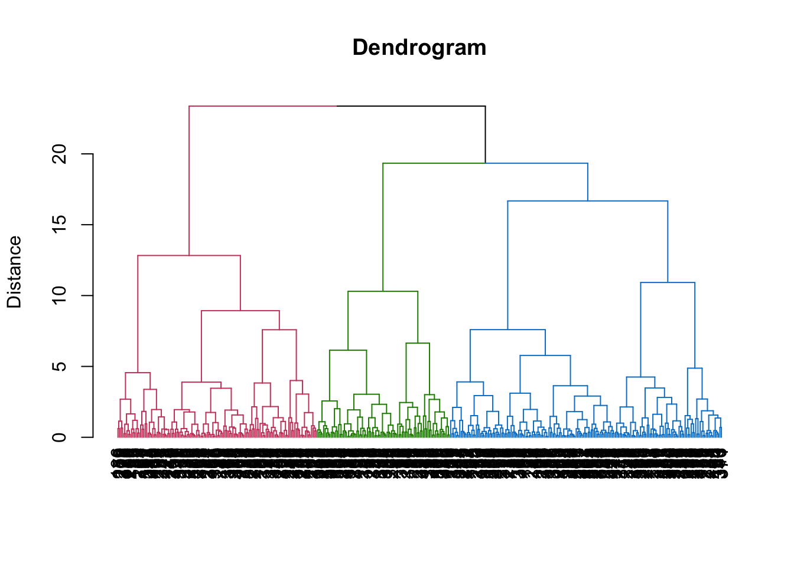
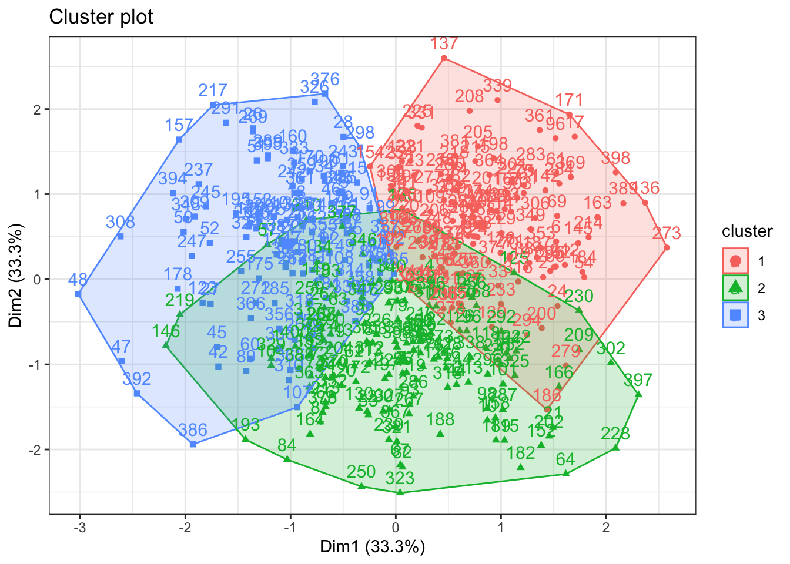

Chapter6 Clustering
6.1 Dendrogram
EFA_feature = EFA_with_score %>%
dplyr::select(PA1, PA2,PA4)
# Run a cluster analysis on a distance matrix and using the Ward method
c<- hclust(dist(EFA_feature), method="ward.D2")
# Dendrogram
library(dendextend)##
## ---------------------
## Welcome to dendextend version 1.15.2
## Type citation('dendextend') for how to cite the package.
##
## Type browseVignettes(package = 'dendextend') for the package vignette.
## The github page is: https://github.com/talgalili/dendextend/
##
## Suggestions and bug-reports can be submitted at: https://github.com/talgalili/dendextend/issues
## You may ask questions at stackoverflow, use the r and dendextend tags:
## https://stackoverflow.com/questions/tagged/dendextend
##
## To suppress this message use: suppressPackageStartupMessages(library(dendextend))
## ---------------------##
## Attaching package: 'dendextend'## The following object is masked from 'package:data.table':
##
## set## The following object is masked from 'package:stats':
##
## cutreeplot(set(as.dendrogram(c),
"branches_k_color", # to highlight the cluster solution with a color
k = 3),
ylab = "Distance",
main = "Dendrogram",
cex = 0.2)
6.2 K-Means
set.seed(42)
EFA_kmeans <- kmeans(EFA_feature , centers = 3)
EFA_kmeans## K-means clustering with 3 clusters of sizes 118, 157, 125
##
## Cluster means:
## PA1 PA2 PA4
## 1 0.6951101 -1.13310118 0.01250923
## 2 -1.0108796 -0.03774508 -0.06434312
## 3 0.6134809 1.11705533 0.06900625
##
## Clustering vector:
## [1] 2 3 1 3 1 1 3 2 1 2 2 1 2 1 3 3 3 3 2 2 2 2 3 2 2 1 2 3 2 1
## [31] 2 1 2 1 1 1 1 3 1 1 3 2 2 2 2 3 2 1 1 2 1 1 2 1 2 2 3 1 3 2
## [61] 1 2 2 2 3 2 2 3 3 1 3 2 2 1 1 2 2 1 2 3 1 2 2 2 1 2 2 1 2 2
## [91] 1 3 2 3 1 1 1 2 2 2 2 1 2 2 2 3 2 3 1 1 3 3 2 3 2 3 3 2 2 2
## [121] 1 2 3 1 3 2 2 2 3 2 1 1 1 3 3 1 1 1 3 3 3 1 2 2 3 2 3 3 2 2
## [151] 1 2 3 3 1 2 3 2 1 3 3 1 3 2 2 2 1 1 2 1 3 2 2 3 1 3 1 3 3 1
## [181] 2 2 3 1 3 2 1 2 2 1 3 1 2 2 3 2 2 3 3 2 3 2 1 2 1 1 2 1 2 3
## [211] 1 3 2 1 1 2 1 3 2 1 3 2 1 2 1 2 3 2 3 2 2 1 1 1 1 1 1 3 2 3
## [241] 2 3 3 2 1 2 3 1 2 2 1 2 3 3 3 2 1 2 2 3 1 1 1 3 1 3 2 2 3 2
## [271] 1 2 1 2 3 1 3 2 2 3 1 3 3 3 1 2 2 1 3 3 3 2 2 3 3 2 1 3 3 1
## [301] 3 2 1 3 2 1 3 3 1 2 2 2 2 3 2 3 2 3 3 1 2 3 2 3 2 3 2 2 2 3
## [331] 3 2 1 3 3 2 2 2 3 2 1 1 1 1 1 3 2 3 1 2 3 2 1 2 1 3 3 3 1 3
## [361] 3 3 2 3 2 2 2 3 3 2 1 1 3 3 3 1 3 2 1 1 3 1 1 3 2 2 1 2 1 2
## [391] 1 2 3 1 1 2 2 3 3 2
##
## Within cluster sum of squares by cluster:
## [1] 161.8675 255.1158 206.5558
## (between_SS / total_SS = 47.9 %)
##
## Available components:
##
## [1] "cluster" "centers" "totss" "withinss"
## [5] "tot.withinss" "betweenss" "size" "iter"
## [9] "ifault"# factor plot
fviz_cluster(EFA_kmeans,
data = EFA_feature) +
theme_bw()
6.3 Interpretation of the results
6.3.1 Heatmap Table
# Average for each cluster with one step
vars_cluster_agg = aggregate(vars_cluster[, 2:31],
by = list(cluster = EFA_kmeans$cluster),
FUN = mean)
# reshape
df <- vars_cluster_agg %>%
gather(variable, value, -cluster) # to transfrom from wide to long formatlibrary(gt)
library(scales)##
## Attaching package: 'scales'## The following object is masked from 'package:purrr':
##
## discard## The following object is masked from 'package:readr':
##
## col_factor## The following objects are masked from 'package:psych':
##
## alpha, rescale# reshpae, long to wide (cluster )
df_wider = df%>%
dplyr::mutate(cluster = paste0("Cluster", cluster)) %>%
dplyr::mutate(., across(where(is.numeric), round, 2)) %>%
spread(., key=cluster, value =value)
# cluster columns
clusterCols = c("Cluster1", "Cluster2", "Cluster3")
# color
colfunc <- colorRampPalette(c("darkblue", "lightgrey"))
# DT table
DT::datatable(df_wider, options = list(pageLength = 15)) %>%
formatStyle("Cluster1",
backgroundColor = styleEqual(sort(unique(df_wider$Cluster1),
decreasing = TRUE),
colfunc(length(
unique(df_wider$Cluster1)
)))) %>%
formatStyle("Cluster2",
backgroundColor = styleEqual(sort(unique(df_wider$Cluster2),
decreasing = TRUE),
colfunc(length(
unique(df_wider$Cluster2)
)))) %>%
formatStyle("Cluster3",
backgroundColor = styleEqual(sort(unique(df_wider$Cluster3),
decreasing = TRUE),
colfunc(length(
unique(df_wider$Cluster3)
)))) %>%
formatStyle(clusterCols, color = "white")6.3.2 Histogram
df = vars_cluster %>%
gather(variable, value, -cluster) %>%
as.data.frame()
# factorize cluster
df$cluster <- factor(df$cluster)
# plot
vars_cluster_hist = ggplot(df, aes(value,
fill = cluster,
color = cluster)) +
geom_histogram(alpha = 0.3, position = "identity") +
facet_wrap( ~ variable, scales = "free",ncol = 6) +
theme_economist_white()
vars_cluster_hist_path = file.path(plotDir, "vars_cluster_hist.png")
ggsave(
filename = vars_cluster_hist_path,
plot = vars_cluster_hist,
width = 3000,
height = 3000,
units = "px"
)